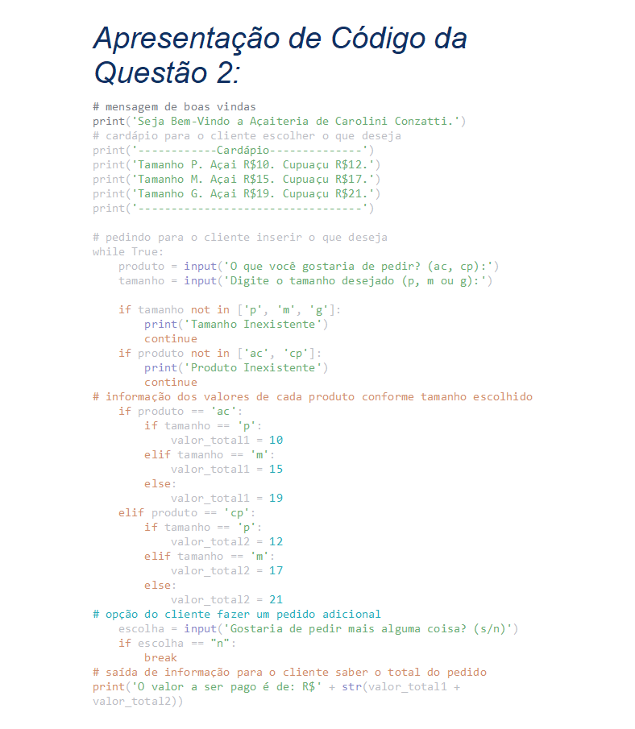

Trabalho prático da matéria Lógica de Programação e Algoritmos, era necessário seguir um exemplo já pronto e práticar a digitação de códigos na intenção de ficar igual ao exemplo proposto.

Trabalho da matéria Análise de Sistemas, o intuito era assistirmos uma entrevista e de lá retirarmos quais eram requisitos funcionais e não funcionais.

Trabalho da matéria Fundamentos de Design de Sistemas, era necessário a criação de um diagrama de média fidelidade, onde tinhamos liberdade de criar o que fosse do nosso interesse.

Trabalho da matéria Design de Interação, o objetivo era escolher um aplicativo de vendas e criasse um diagrama de alta fidelidade e interação idêntico ao aplicativo original.